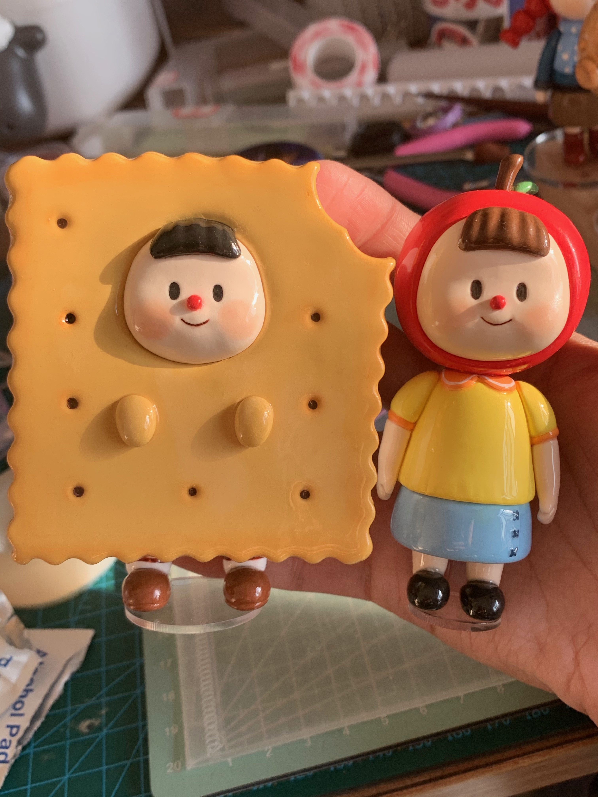
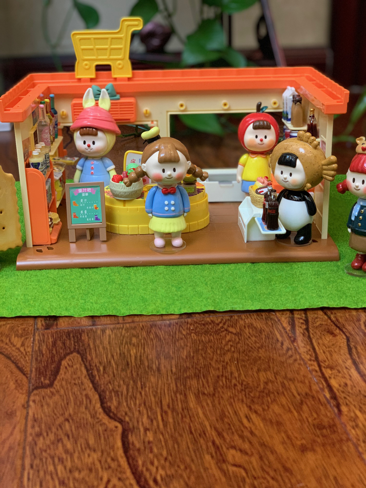
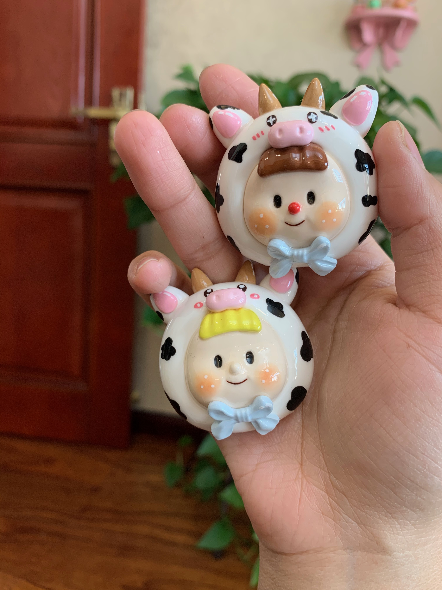

I’ve been particularly fond of cute animals since an early age. My parents adopted a little teddy dog for me as a companion dog when I was 12 years old. It has been with our family for more than 9 years and has brought us many happy times. Under our careful care it’s still very healthy and lively even though it’s entered it’s later years. My family runs a family farm, and many times I notice that there are times when animals are born to be forgotten by their mothers, or mothers who have too many chicks to take care of and have to abandon half of them. Hence I often have to manually intervene. I will often foster some of the animals at home. For example, last year, I took care of two newborn ducklings and helped them until they were able to be reunited with their own flock. It brings me great pride and accomplishment.
  I also love to do handywork, especially making clay sculptures. During the pandemic while I was out of school, I tried to remake one of the doll models from Ac Toys(a famous figurine brand). I tried to recreate the PVC figure by using magic clay and following teaching videos on the Internet. The process of molding was very relaxing and enjoyable, and the finished product made me very satisfied and proud. Because I was posting my work on social platforms, I gained more than a thousand followers, and numerous comments and likes. I hope I can design my own brand of fashion toys figurines in the future as a hobby project and use these cute little objects to warm and heal the hearts of busy adults in their spare time.

After graduating from high school, I decided to study abroad in Melbourne in 2018. I finish my language and foundation year courses at Monash college in the Monash city campus until 2019. Unfortunately, in 2020, the world has experienced the severe impact of COVID-19. I decided to stay in China and take a leave of absence for a year. Now, in 2021, RMIT has launched the OLC program in collaboration with Nanjing University of Aeronautics and Astronautics in China, I am currently taking an online course in Nanjing.
I hadn't decided what I wanted to major in until I graduated from basic classes. Although I love crafting, I don't plan to make design my college major. Because I don't want to put too much pressure on myself in this hobby, it is mainly for the fun it can bring me. Because I have a personality that is open to exploration and making friends, I decided to choose a major with a broader and more selective range of future development. He better not be easily obsolete in the coming decades and can learn very specialized and unique skills and knowledge. It is better to have some relevance to business, and I want to reach out to more people and develop myself to have more sensitive and high thinking ability. After the foundation year course, I talked to some friends and overseas study agents and asked their opinions on my choice of major. They said that IT is a good direction for a major, which involves the science thinking of mathematics, but not limited to science, but also includes some thinking directions of analyzing future trends and business. there is a wide range of jobs that can be chosen after IT. After completing my undergraduate studies, I was able to choose the direction that interested me the most as my graduate specialization. For example, I could choose, for my preferences and personality, business data analysis. In addition, I was very interested in the user requirements and big data analysis and reporting that I needed to learn in the software development process, which gave me the idea to want to study this major. Some people may find the process of learning to program a little boring, but I think it's like I'm doing a craft by putting parts together little by little to form a great piece of work. It would be a very proud thing to do. I choose RMIT because through a whole year of study in Monash college city campus, I have fallen in love with Melbourne, a city full of freedom and comfort. I also know another university named RMIT in the city center of Melbourne this year. Although RMIT's overall ranking is not as high as Monash's, RMIT is more focused on the practicality of its courses and has a very high local recognition and employment rate. These qualities are very important to me and very attractive to me. In order to learn more practical knowledge and continue to live a convenient life in the city center. So, that’s why I decided to transfer to RMIT. One more reason I want to learn IT is during the New Crown epidemic, Internet use has increased dramatically. Most of the things people need to do, such as shopping and socializing and learning, can be done online. While brick-and-mortar stores were hit hard, e-commerce, or companies that operate on the Internet, gained more revenue. This terrible experience also made me realize the importance of the Internet and the bright future of the Internet industry, and made me more confident in studying IT.